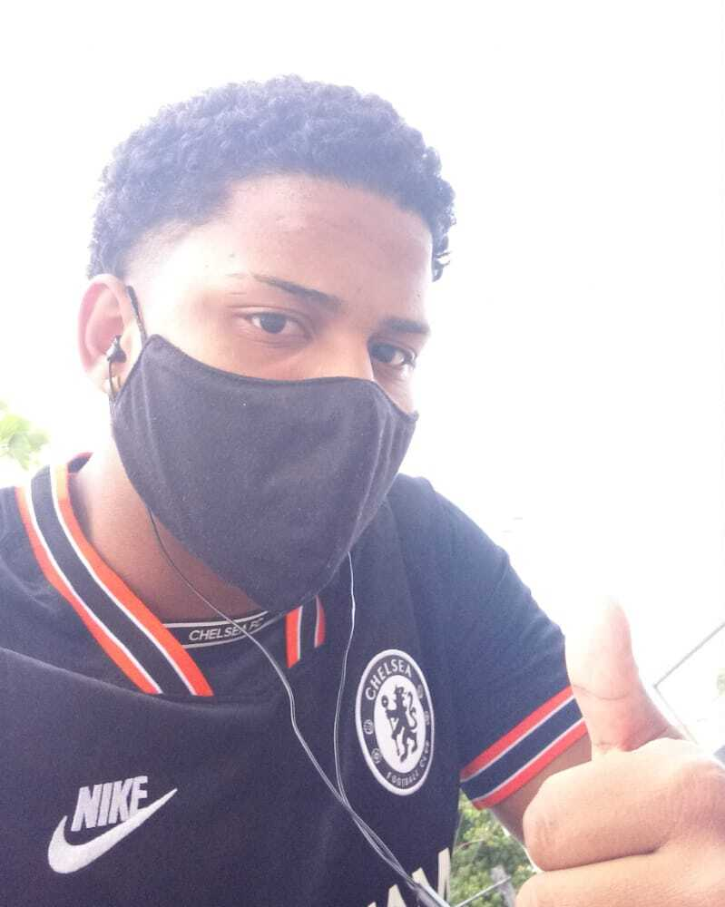
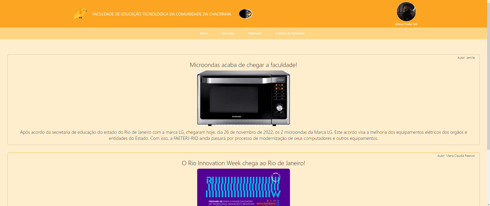
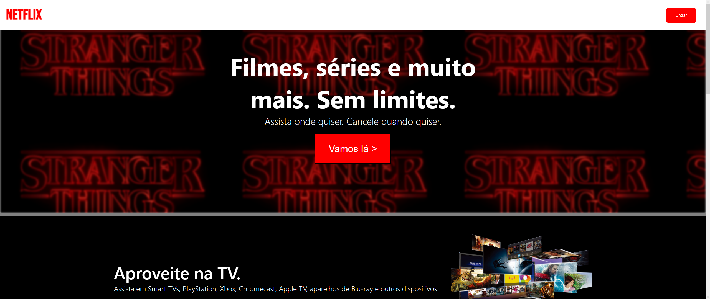

Olá, eu me chamo João.
Sobre Mim
Eai, beleza?! Me chamo João Vitor (também conhecido como Feja), tenho 20 anos e estou cursando Análise e Desenvolvimento de Sistemas na FAETERJ-RJ. Minha paixão por tecnologia vem desde pequeno quando recebi meu primeiro computador dos meus pais. Era um Celeron, mas era minha felicidade diária. Desde então, comecei a editar vídeos para o Youtube até que,em 2017, concursado, entrei no Colégio Pedro II para fazer Ensino Médio Técnico em Análise e Desenvolvimento de Sistemas com foco nas linguaguem C#, PHP e desenvolvimento Web. Depois que fiz meu primeiro projeto, percebi que era aquilo que queria para minha vida. Hoje em dia, estou na graduação estudando a linguagem C e desenvolvimento Web e, por conta própria, estou bucando framework de desenvolvimento web para me aprofundar.
Projetos

Canário
Canário é um homenagem ao Coruja, site oficial da FAETERJ-RJ. O Canário numa reprodução do Coruja com página escura.
